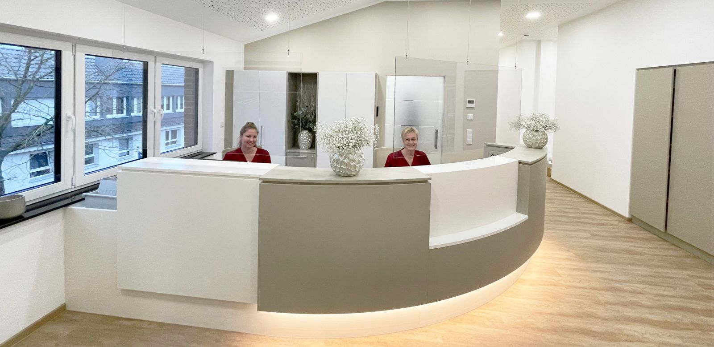

Gnoiener Platz 2 · Wettringen
Ihr kommunales Hausarztzentrum in Wettringen
Fünf Ärztinnen und Ärzte für Allgemeinmedizin und Innere Medizin, ein eingespieltes Praxisteam, ein Haus am Gnoiener Platz.
Wohin möchten Sie?
Vier Wege, einer passt. Das Kreuz aus unserem Logo zeigt ihn.
Aktuelles
Alle MeldungenMeldungen werden geladen. Zur Übersicht
Was wir für Sie tun
Alle LeistungenHausärztliche Versorgung
Akute und chronische Erkrankungen, Vorbeugung und Früherkennung – für die ganze Familie.
Vorsorge
Check-up, Hautkrebs-Screening, Darmkrebs-Früherkennung, Krebsvorsorge für Männer, Ultraschall der Bauchschlagader.
Chronische Erkrankungen
Strukturierte Programme (DMP) für Diabetes Typ 2, koronare Herzkrankheit, Asthma und COPD.
Diabetes
Beratung und Schulung durch unsere Diabetesberaterin DDG, gemeinsam mit dem ärztlichen Team.
Hausbesuche
Wenn Sie aus medizinischen Gründen nicht zu uns kommen können, besuchen wir Sie nach Absprache.
Wundversorgung
Mit einer Wundexpertin ICW im Team.
Ärztinnen und Ärzte
Das ganze Team Dr. med. Claudia GemenFachärztin für Allgemeinmedizin, Chirotherapie, Psychotherapie
Dr. med. Claudia GemenFachärztin für Allgemeinmedizin, Chirotherapie, Psychotherapie Julia RaußenFachärztin für Innere Medizin, Palliativmedizin
Julia RaußenFachärztin für Innere Medizin, Palliativmedizin Doctor medic Alina IonicaFachärztin für Innere Medizin
Doctor medic Alina IonicaFachärztin für Innere Medizin Dr. med. Thomas MeemannFacharzt für Innere Medizin, Arzt in Weiterbildung
Dr. med. Thomas MeemannFacharzt für Innere Medizin, Arzt in Weiterbildung Dr. med. Linda HesseFachärztin für Allgemeinmedizin, Chirotherapie in Weiterbildung
Dr. med. Linda HesseFachärztin für Allgemeinmedizin, Chirotherapie in WeiterbildungArbeiten im MVZ Wettringen
Medizin machen, ohne eine Praxis führen zu müssen. Bei uns sind Ärztinnen und Ärzte angestellt: geregelte Arbeitszeiten, geregelte Vertretung, kein wirtschaftliches Risiko.
Ärztin / Arzt
Allgemeinmedizin oder Innere Medizin, in Voll- oder Teilzeit.
Medizinische Fachangestellte
Ein großes Team mit festen Aufgaben, vom Impfmanagement bis zur Wundversorgung.
Ausbildung zur MFA
Drei Jahre in einem modernen Umfeld, mit individueller Einarbeitung.
Ihr kommunales MVZ
Die Gemeinde Wettringen hat das MVZ 2022 gegründet, damit die hausärztliche Versorgung im Ort bleibt. Seit dem 9. Januar 2023 behandeln wir in der ehemaligen Tuchfabrik Cruse am Gnoiener Platz. Im Oktober 2025 sind Doctor medic Alina Ionica und Dr. med. Claudia Gemen aus Neuenkirchen zu uns gekommen.
Lieber zurückgerufen werden?
Hinterlassen Sie Ihre Nummer, wir melden uns. Bitte schreiben Sie hier keine Beschwerden oder Befunde hinein, dafür ist medflex der sichere Weg.
Danke, das wäre angekommen.
In der fertigen Seite läge Ihr Rückrufwunsch jetzt bei der Anmeldung, und das Team ruft Sie zur gewünschten Zeit zurück. Im Entwurf wird nichts versendet.
So erreichen Sie uns
MVZ Wettringen gGmbH
Gnoiener Platz 2 (2. Obergeschoss)
48493 Wettringen
Telefon 02557 377
Fax 02557 1506
info@mvz-wettringen.de
Der Kartenlink öffnet OpenStreetMap in einem neuen Fenster. Auf dieser Seite ist keine Karte eingebettet.
Sprechzeiten
Mo–Fr 7:30–12:00 Uhr, Mo, Di, Do 14:30–18:00 Uhr